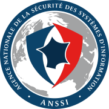

<script
  type="module"
  crossorigin
  src="/lib-svelte/dist/assets/extrait.js"
></script>

<section class="titres-page">
  <div class="contenu-section">
    <h1>MesServicesCyber</h1>
    <h2>Innovation ANSSI</h2>
  </div>
</section>
<section class="chapeau fond-sombre">
  <div class="contenu-section">
    <h1>Mes&ZeroWidthSpace;Services&ZeroWidthSpace;Cyber</h1>
    <p>
      Accédez aux services et ressources cyber proposés par l’ANSSI et ses
      partenaires.
    </p>
    <div class="boutons">
      <a href="/test-maturite" class="bouton primaire"
        >Tester votre maturité cyber</a
      >
      <a href="/catalogue/" class="bouton secondaire">Découvrir nos services</a>
    </div>
  </div>
</section>
<section class="services-dispos">
  <div class="contenu-section">
    <h1>Des services adaptés à vos besoins cyber</h1>
    {% include script-donnees-json.html %}

    <div id="extrait"></div>

    <a class="bouton primaire">Découvrez plus de services</a>
  </div>
</section>

<section class="encart fond-sombre">
  <div class="contenu-section">
    <div class="liste-parcours">
      <div class="carte parcours">
        
        <h2>Cybersécurité : se lancer !</h2>
        <p>
          Découvrez les services et les ressources pour aider votre organisation
          à se lancer dans une démarche de renforcement de la cybersécurité.
        </p>
        <a href="/parcours-debuter" class="bouton primaire"
          >Débutez en cybersécurité</a
        >
      </div>
    </div>
  </div>
</section>

<section class="votre-espace-cyber">
  <div class="contenu-section">
    <h1>Accédez à votre espace MesServicesCyber</h1>
    <div class="contenu-msc">
      
      <div class="fonctions-msc">
        <div class="fonction-msc couleur1">
          <h2>Gérez votre profil ANSSI</h2>
          <p>
            Dites-le nous une fois pour utiliser tous les services numériques de
            l'ANSSI en commençant par vous authentifier via ProConnect (À
            venir).
          </p>
        </div>
        <div class="fonction-msc couleur2">
          <h2>Comparez-vous avec d’autres entités</h2>
          <p>
            Comparez votre organisation à d'autres similiaire à la vôtre pour
            identifier vos atouts et vos axes d'amélioration.
          </p>
        </div>
        <div class="fonction-msc couleur1">
          <h2>Accédez à vos services et ressources</h2>
          <p>
            Accédez à une liste de services et ressources personnalisés à
            partager au sein de votre organisation pour progresser en
            cybersécurité.
          </p>
        </div>
        <div class="fonction-msc couleur2">
          <h2>Trouvez les contacts pour vous accompagner</h2>
          <p>
            Retrouvez une liste de contacts et partenaires de votre région pour
            répondre à toutes vos questions sur la cyber. (À venir)
          </p>
        </div>
      </div>
    </div>
    <a href="#" class="bouton primaire">Connectez-vous sur MesServicesCyber</a>
  </div>
</section>

<section class="nis2">
  <div class="contenu-section">
    
    <h1>La Directive NIS2 est là&nbsp;!</h1>
    <p>
      Connaissez-vous cette Directive ? Savez-vous si votre entité sera régulée
      ? Pour en savoir plus et faire le test pour vérifier si votre entité sera
      soumise à cette directive, allez sur MonEspaceNIS2.
    </p>
    <a
      href="https://monespacenis2.cyber.gouv.fr/"
      target="_blank"
      class="bouton secondaire"
    >
      En savoir plus
    </a>
  </div>
</section>

<section class="anssi">
  <div class="contenu-section">
    <h1>Qu’est-ce que l’ANSSI&nbsp;?</h1>
    
    <p>
      Créée en 2009, l’Agence nationale de la sécurité des systèmes
      d’information (ANSSI) est l’autorité nationale en matière de cybersécurité
      et de cyberdéfense.
    </p>
    <p>
      Son action pour la protection de la Nation face aux cyberattaques se
      traduit en quatre grandes missions : défendre, connaître, partager,
      accompagner.
    </p>
    <a
      href="https://monespacenis2.cyber.gouv.fr/"
      target="_blank"
      class="bouton secondaire"
    >
      En savoir plus
    </a>
  </div>
</section>
